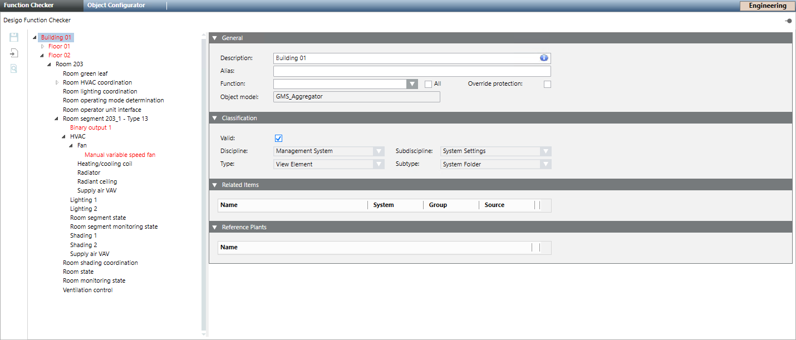

Display and Edit Missing Functions
Scenario: You want to assign missing functions to one or more objects.
Flowchart:
Prerequisites:
- System Manager is in Engineering mode.
Steps:
1 – Starting Function Checker
- In System Browser, select Management View.
- Select Project > System settings > Conversion tools > Desigo Function Checker.
2 – Display Missing Functions
- Select the Function Checker tab.
- In System Browser, select logical view.
NOTE: You can edit in any view. - Select Logical > [Hierarchy] >[Plant].
NOTE: You can select on any hierarchy level. - Drag the selected plant to the empty area of the Function Tool tab.
- The plant is displayed in the structure:
- Objects with no assigned function have a red state. The folder is automatically opened if the objects below it do not have a function.

3 – Manually Assign Missing Functions
- Select the one of the following options:
- Select an object in the Function Checker browser or
- Use Ctrl or Shift to select all objects for editing.
- Select the General expander.
- In the Function drop-down list, select the corresponding Function.
- The check box All:
Is cleared: Displays only functions where the object model and function mapping match.
Enabled: All functions defined in the system. - Assigned objects have state green with a asterisk.
- Click Save
 .
.
- Edited objects change the state from green to black.
4 – Display Assigned Functions in the Browser
- Click Display assigned function in the tree.
- The functions assigned to an object are displayed behind the =>.